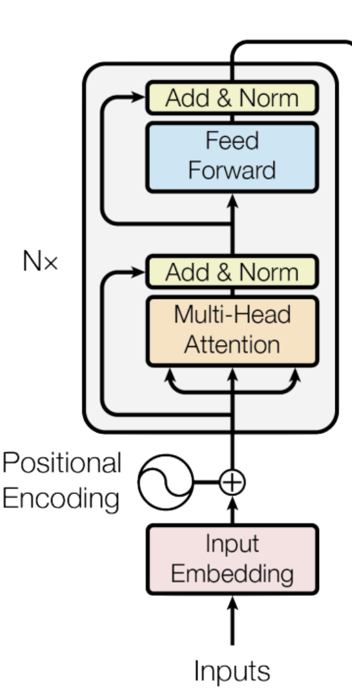
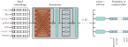
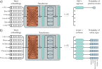

Encoder model

In this section, we will discuss encoder models, with a focus on BERT (Bidirectional Encoder Representations from Transformers) as an example. We will cover the architecture, pre-training, and fine-tuning processes.
BERT is an encoder model that uses a vocabulary of 30,000 tokens. Input tokens are converted to 1024-dimensional word embeddings and passed through 24 transformer layers. Each contains a self-attention mechanism with 16 heads. The queries, keys, and values for each head are of dimension 64 (i.e., the matrices \(\Omega_{vh}, \Omega_{qh}, \Omega_{kh}\) are 64 ×1024).
The dimension of the single hidden layer in the fully connected networks is 4096. The total number of parameters is ∼340 million. When BERT was introduced, this was considered large, but it is now much smaller than state-of-the-art models.
Pre-training

Pre-training for BERT-like encoder. The input tokens (and a special
Here, these are represented as rows rather than columns, so the box labeled “word embeddings” is \(\mathbf{X}^T\) . These embeddings are passed through a series of transformer layers (orange connections indicate that every token attends to every other token in these layers) to create a set of output embeddings.
A small fraction of the input tokens are randomly replaced with a generic
In pre-training, the goal is to predict the missing word from the associated output embedding.
To this end, the outputs corresponding to the masked tokens are passed through softmax functions, and a multiclass classification loss is applied to each.
This task has the advantage that it uses both the left and right context to predict the missing word but has the disadvantage that it does not make efficient use of data; here, seven tokens need to be processed to add two terms to the loss function.
In the pre-training stage, the network is trained using self-supervision. This allows the use of enormous amounts of data without the need for manual labels.
For BERT, the self-supervision task consists of predicting missing words from sentences from a large internet corpus (figure 12.10).
During training, the maximum input length is 512 tokens, and the batch size is 256.
The system is trained for a million steps, corresponding to roughly 50 epochs of the 3.3-billion word corpus.
Predicting missing words forces the transformer network to understand some syntax.
For example, it might learn that the adjective red is often found before nouns like house or car but never before a verb like shout.
It also allows the model to learn superficial common sense about the world. For example, after training, the model will assign a higher probability to the missing word train in the sentence The
Masked Language Modeling
Masked language modeling (MLM) is a pre-training objective where certain tokens in the input sequence are randomly masked, and the model is trained to predict these masked tokens based on their surrounding context.
During pre-training, the parameters of the transformer encoder are learned through self-supervised learning on a large corpus of text. The objective is to predict masked tokens using their surrounding context, allowing the model to learn the statistical patterns and relationships within language.
The text is first tokenized using a subword tokenization algorithm (such as BPE or WordPiece) and converted into token IDs. These token IDs are organized into fixed- or variable-length input sequences. For each sequence, 15% of token positions are randomly selected for prediction. In the original BERT approach, 80% of these selected tokens are replaced with the special [MASK] token ID, 10% with a random token ID, and 10% are left unchanged.
The [MASK] token has its own learnable embedding vector in the embedding matrix. The modified sequence is passed through the transformer encoder, which produces a contextualized representation for every token position. At each selected position, the model uses this representation to predict the original token ID, which serves as the training label. The prediction error is used to update the model’s parameters through backpropagation.
The goal here is for the model to learn general information about the statistics of language.
In the fine-tuning stage, the resulting network is adapted to solve a particular task using a smaller body of labelled training data.
Internet-scale data
Common Crawl
Common Crawl is a non-profit organization that crawls the web and freely provides its archives and datasets to the public. It is one of the largest and most comprehensive web crawls available. It has been crawling the web since 2008 and has petabytes (thousands of terabytes) of data.
The code and data are open source and free to use for anyone. Code can be accessed at https://github.com/commoncrawl and the data can be accessed at https://data.commoncrawl.org/.
HuggingFace is a company and open-source community that provides tools and libraries for natural language processing (NLP) and machine learning. They are most well-known for:
- Transformers library, which provides pre-trained models for various NLP tasks.
- Data Sharing a platform for sharing and discovering datasets, models, and other resources related to NLP.
- Model Hub, which hosts thousands of pre-trained models for various NLP tasks.

FineWeb
Fineweb is a dataset created by Hugging Face that consists of cleaned and filtered web pages from Common Crawl. It is derived from 96 Common Crawl snapshots. Extensive filtering (boilerplate removal, quality heuristics), deduplication, and cleaning to produce higher-quality web text than raw Common Crawl for FineWeb. It is designed to be used for training large language models. The dataset contains over 1.2 billion web pages, making it one of the largest datasets available for this purpose.
Once cleaned, the data still needs to be compressed into something usable. Instead of feeding raw text into the model, it gets converted into tokens: a structured, numerical representation.
Demo: Reproducing OpenAI’s GPT-2
GPT-2, released by OpenAI in 2019, was an early example of a transformer-based LLM.
Here’s what it looked like:
1.6 billion parameters
1024-token context length
Trained on ~100 billion tokens
The original GPT-2 training cost was $40,000.
Since then, efficiency has improved dramatically. Andrej Karpathy managed to reproduce GPT-2 using llm.c for just $672. With optimized pipelines, training costs could drop even further to around $100 .
Why is it so much cheaper now?
Better pre-training data extraction techniques → Cleaner datasets mean models learn faster.
Stronger hardware and optimized software → Less computation needed for the same results.
Open Base Models
The models under discussion do not strictly follow the Open Source Initiative (OSI) definitions of open-source AI ([OSI AI Definition](https://opensource.org/ai)). Instead, we use the term open base models to describe models where the weights are publicly accessible, but training data and full reproducibility may not be provided.Some companies train massive language models (LMs) and release the base models for free. A base model is essentially a raw, pre-trained LM—it still requires fine-tuning or alignment to be practically useful.
Base models are trained on unfiltered internet-scale data, meaning they generate raw completions but lack alignment with human intent.
OpenAI released GPT-2, an open-weight and source-available model, but not fully open-source under OSI’s definition since its training data was not released.
Meta released Llama 3.1 (405B parameters), an open-weight but not open-source model.
To release a base model, two key components are required:
Inference code → Defines the steps the model follows to generate text. Typically written in Python.
Model weights → The billions of parameters that encode the model’s knowledge. ## The ‘Psychology’ of Base Models
Base models can be thoughts of as token-level internet document simulators.
Every run produces a slightly different output (stochastic behavior).
They can regurgitate parts of their training data.
The parameters are like a lossy zip file of internet knowledge.
You can already use them for applications like:
- Translation → Using in-context examples.
- Basic assistants → Prompting them in a structured way.
Want to experiment with one? Try the Llama 3 (405B base model) here.
At its core, a base model is just an expensive autocomplete. It still needs fine-tuning.
Post-Training: Supervised Fine-tuning
So far, we’ve looked at base models, which are just pre-trained text generators. But to make an actual assistant, you need post-training.
Base models hallucinate a lot → They generate text, but it’s not always useful.
Post-training fixes this by fine-tuning the model to respond better.
The good news? Post-training is way cheaper than pre-training (e.g., months vs. hours).

After pre-training, the encoder is fine-tuned using manually labeled data to solve a particular task. Usually, a linear transformation or a multi-layer perceptron (MLP) is appended to the encoder to produce whatever output is required.
Example text classification task. In this sentiment classification task, the
token embedding is used to predict the probability that the review is positive. Example word classification task. In this named entity recognition problem, the embedding for each word is used to predict whether the word corresponds to a person, place, or organization, or is not an entity.
In the fine-tuning stage, the model parameters are adjusted to specialize the network to a particular task. An extra layer is appended onto the transformer network to convert the output vectors to the desired output format. Examples include:
Text classification: In BERT, a special token known as the classification or <cls> token is placed at the start of each string during pre-training. For text classification tasks like sentiment analysis (in which the passage is labeled as having a positive or negative emotional tone), the vector associated with the <cls> token is mapped to a single number and passed through a logistic sigmoid (figure 12.11a). This contributes to a standard binary cross-entropy loss (section 5.4).
Word classification: The goal of named entity recognition is to classify each word as an entity type (e.g., person, place, organization, or no-entity). To this end, each input embedding \(\mathbf{x}_n\) is mapped to an \(E\times 1\) vector where the \(E\) entries correspond to the \(E\) entity types. This is passed through a softmax function to create probabilities for each class, which contribute to a multiclass cross-entropy loss (figure 12.11b).
Text span prediction: In the SQuAD 1.1 question answering task, the question and a passage from Wikipedia containing the answer are concatenated and tokenized. BERT is then used to predict the text span in the passage that contains the answer. Each token maps to two numbers indicating how likely it is that the text span begins and ends at this location. The resulting two sets of numbers are put through two softmax functions. The likelihood of any text span being the answer can be derived by combining the probability of starting and ending at the appropriate places.

- You can see a production-grade LLM architecture example here.
Conversations Data
Once the base model is trained on internet data, the next step is post-training. This is where we replace the internet dataset with human/assistant conversations to make the model more conversational and useful.
Pre-training takes months, but post-training is much faster. It can take as little as a few hours.
The model’s algorithm stays the same, we’re just fine-tuning the existing parameters.
To teach a model how to handle back-and-forth conversations, we use chat templates. These define the structure of a conversation and let the model know which part is user input and which part is an assistant response. You can read more about them here.
Example template:
<|im_start|>system<|im_sep|>You are a helpful assistant<|im_end|>
<|im_start|>user<|im_sep|>What is 4 + 4?<|im_end|>
<|im_start|>assistant<|im_sep|>4 + 4 = 8<|im_end|><|im_start|> and <|im_end|> are special tokens that help structure conversations.
The model didn’t see these new tokens during pre-training, they’re introduced during post-training.
OpenAI has discussed fine-tuning LLMs for conversation in the InstructGPT paper.
To visualize this, go to tiktokenizer.
One such post-training dataset is OASST1. Early post-training datasets were hand-curated by humans. Now, models like UltraChat can generate synthetic conversations, allowing models to improve without as much human input. You can visualize these mostly synthetic datasets here.
Hallucinations, Tool Use, and Memory
One major issue with LLMs is hallucination, where the model confidently generates incorrect or made-up information.
Why does this happen?
During post-training, models learn that they must always give an answer.
Even if the question doesn’t make sense, the model tries to generate a response instead of saying, “I don’t know.”
How Meta Deals with Hallucinations
Meta’s research on factuality (from their Llama 3 paper) describes a way to improve this:
- Extract a snippet of training data.
- Generate a factual question about it using Llama 3.
- Have Llama 3 generate an answer.
- Score the response against the original data.
- If incorrect, train the model to recognize and refuse incorrect responses.
Essentially, this process teaches models to recognize their own knowledge limits.
Using Tools to Reduce Hallucinations
One way to fix hallucinations is to train models to use tools when they don’t know the answer. This approach follows the pattern:
<|im_start|>user<|im_sep|>Who is Orson Kovacs?<|im_end|>
<|im_start|>assistant<|im_sep|><SEARCH_START>Who is Orson Kovacs?<SEARCH_END><|im_end|>
[...search results...]
<|im_start|>assistant<|im_sep|>Orson Kovacs is ....<|im_end|>With repeated training, models learn that if they don’t know something, they should look it up instead of making things up.
“Vague Recollection” vs. “Working Memory”
Model parameters store vague recollections (like remembering something from a month ago).
Context tokens function as working memory, giving models access to fresh information.
This is why retrieval-augmented generation (RAG) works so well: if the model has direct access to relevant documents, it doesn’t need to guess.
Knowledge of Self
If you prompt an untuned base model about who it is, it will likely hallucinate. For example, a non-OpenAI model might still say it was created by OpenAI simply because most internet data links AI models to OpenAI.
How to Fix This
Hardcode self-identity into training data → Example: Olmo-2 dataset.
Use system messages → At the start of every conversation, include a reminder of its identity.
By default, LLMs have no real knowledge of themselves. Without specific training, they default to generic AI responses.